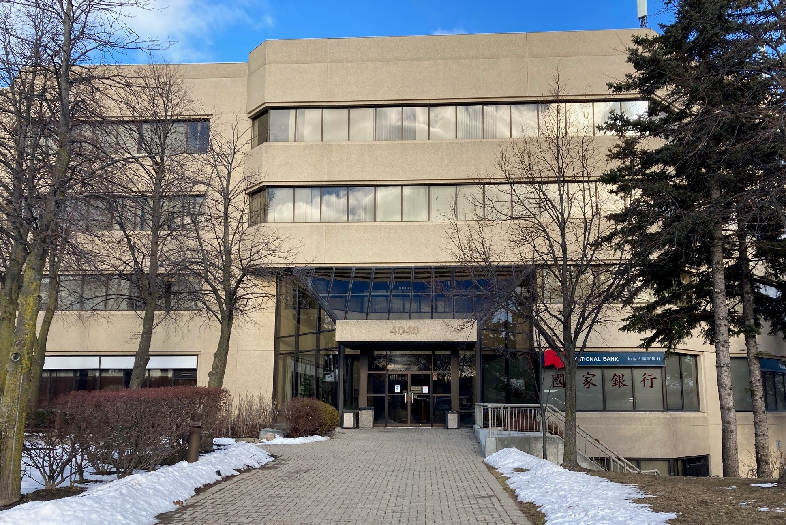

North Scarborough Endoscopy Clinic
Why Choose Us?
Multiple Services
We provide expertise in the management of Colorectal Cancer Screening, GERD, Dyspepsia, Celiac, and Inflammatory Bowel Disease.
Versatile Physicians
Our clinic is staffed by physicians affiliated with the Scarborough Health Network: Gastroenterology (FRCPC), General Surgery (FRCPS) and Anesthesiology (FRCPC).
Convenience for Patients
Located conveniently, in the North East portion of Toronto (Agincourt). Our clinic has free parking and easy access to TTC.